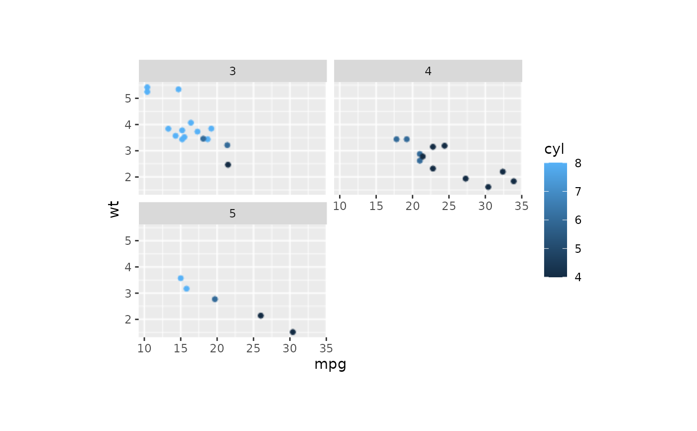
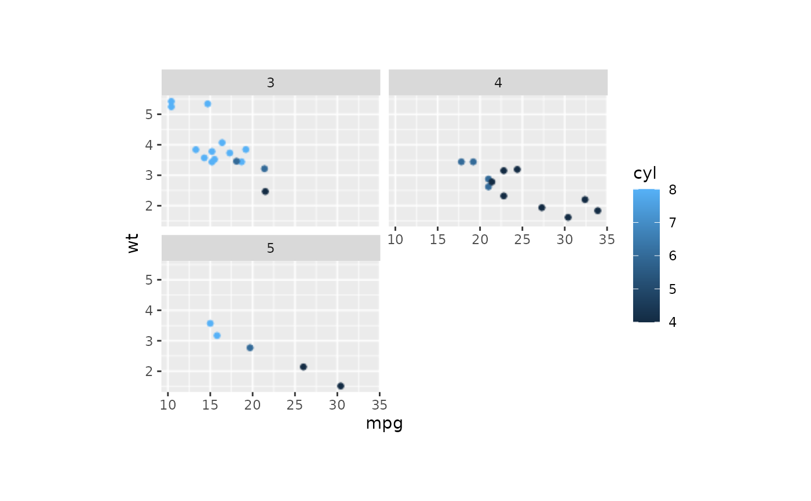

The ggplot object, when stored, can only specify the height and width of the entire plot, not the panel. The latter is obviously more important to control the final result of a plot. This function can set the panel width/height of plot to a fixed value and rasterize it.
Usage
panel_fix(
x = NULL,
panel_index = NULL,
respect = NULL,
width = NULL,
height = NULL,
margin = 1,
padding = 0,
units = "in",
raster = FALSE,
dpi = 300,
return_grob = FALSE,
bg_color = "white",
save = NULL,
verbose = FALSE,
...
)
panel_fix_overall(
x,
panel_index = NULL,
respect = NULL,
width = NULL,
height = NULL,
margin = 1,
units = "in",
raster = FALSE,
dpi = 300,
return_grob = FALSE,
bg_color = "white",
save = NULL,
verbose = TRUE
)Arguments
- x
A ggplot object, a grob object, or a combined plot made by patchwork or cowplot package.
- panel_index
Specify the panel to be fixed. If
NULL, will fix all panels.- respect
Whether row heights and column widths should respect each other.
- width
The desired width of the fixed panels.
- height
The desired height of the fixed panels.
- margin
The margin to add around each panel, in inches. Default is
1.- padding
The padding to add around each panel, in inches. Default is
0.- units
The units in which
height,widthandmarginare given. Can be"mm","cm","in", etc. See grid::unit.- raster
Whether to rasterize the panel.
- dpi
Plot resolution.
- return_grob
Whether to return a grob object instead of a wrapped
patchworkobject. Default isFALSE.- bg_color
The background color of the plot.
- save
NULLor the file name used to save the plot.- verbose
Whether to print the message. Default is
TRUE.- ...
Additional arguments passed to other functions.
Value
If return_grob is TRUE, returns a gtable object.
Otherwise, returns a patchwork object with fixed panel sizes.
The returned object has a size attribute containing width, height, and units.
Examples
library(ggplot2)
p <- ggplot(
data = mtcars, aes(x = mpg, y = wt, colour = cyl)
) +
geom_point() +
facet_wrap(~gear, nrow = 2)
# fix the size of panel
panel_fix(
p,
width = 5,
height = 3,
units = "cm"
)
 # rasterize the panel
panel_fix(
p,
width = 5,
height = 3,
units = "cm",
raster = TRUE,
dpi = 90
)

# `panel_fix` will build and render the plot when input a ggplot object.
# so after `panel_fix`, the size of the object will be changed.
object.size(p)
#> 368016 bytes
object.size(
panel_fix(
p,
width = 5,
height = 3,
units = "cm"
)
)
#> 1376144 bytes
# rasterize the panel
panel_fix(
p,
width = 5,
height = 3,
units = "cm",
raster = TRUE,
dpi = 90
)

# `panel_fix` will build and render the plot when input a ggplot object.
# so after `panel_fix`, the size of the object will be changed.
object.size(p)
#> 368016 bytes
object.size(
panel_fix(
p,
width = 5,
height = 3,
units = "cm"
)
)
#> 1376144 bytes